SupraBench curation report
This report includes a same-day coverage correction. The first pass was too narrowly anchored on the GPT-5.6 launch and did not diff the top rows of every tracked benchmark against the production model inventory.
Coverage correction
A top-row inventory diff found four additional frontier models that were missing completely. Only values with matching benchmark versions and visible primary-source evidence were accepted.
| Model | Accepted results | Stored values | Protocol |
|---|---|---|---|
| Kimi K3 (max) | HLE 43.5%; AA-LCR 74.7%; DeepSWE 67.5%; SciCode 58.7%; MMMU-Pro 81.6%; ARC-AGI-2 60.4% | 435; 747; 675; 587; 81.6; 604 | No-tools values for HLE/MMMU-Pro; max effort for ARC-AGI-2; DeepSWE v1.1 |
| Grok 4.5 | SWE-Bench Pro 64.7%; DeepSWE 1.1 53%; ARC-AGI-2 52.6%; ARC-AGI-3 0.30% | 647; 530; 526; 0.30 | xAI published configuration; ARC rows use High reasoning |
| Claude Opus 5 (High) | ARC-AGI-2 88.3%; ARC-AGI-3 30.16% | 883; 30.16 | Verified High reasoning variant |
| Claude Sonnet 5 (Max) | SWE-Bench Pro 63.2% | 632 | System-card standard configuration: adaptive thinking at max effort, five-trial average |
Protocol correction
The first pass mixed GPT-5.6 tool-assisted MMMU-Pro values into a leaderboard otherwise represented as no-tools. The three rows are explicitly replaced with the newer, protocol-compatible values: Sol 83.0, Terra 80.7, and Luna 78.4. Tool-assisted results remain visible in the source screenshot but are not stored in this benchmark record.
Original accepted changes retained
GPT-5.6 Sol, Terra, Luna, and Claude Mythos 5 remain added. Their SWE-Bench Pro scores are 646, 634, 627, and 803 on the 0–1000 scale. ARC-AGI-3 remains a separate 0–100 benchmark with the previously accepted GPT-5.6, GPT-5.5, Claude Opus 4.8, and Gemini 3.1 Pro Preview results.
Sources: OpenAI GPT-5.6, ARC-AGI-3 competition, technical report, and repository.
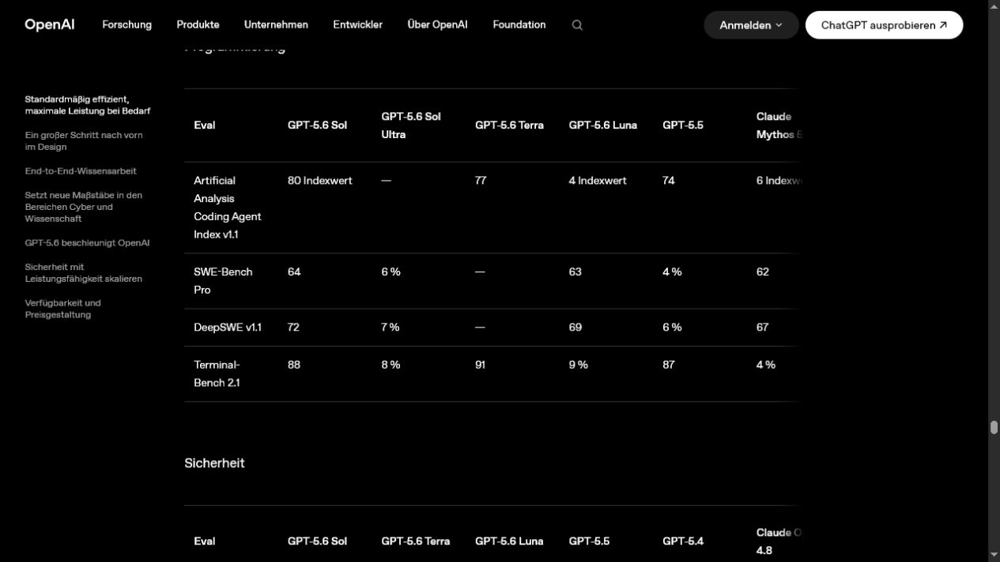
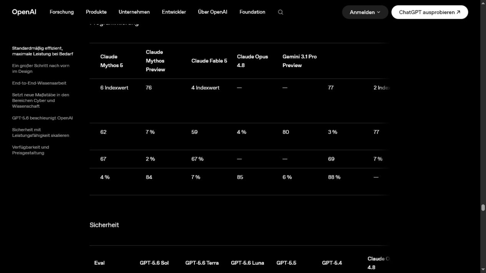
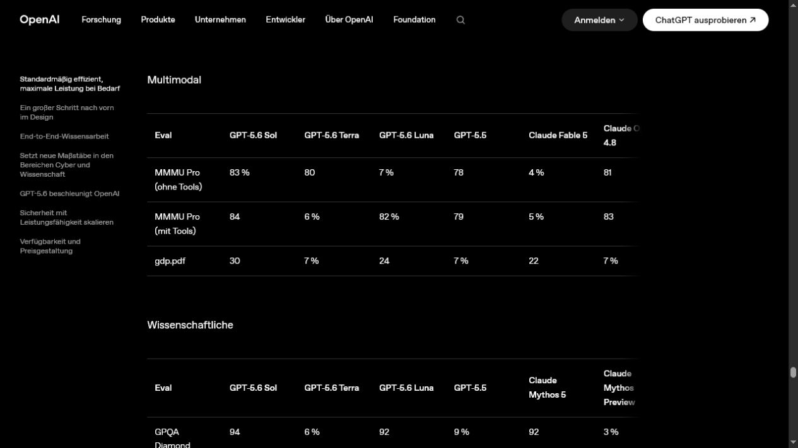
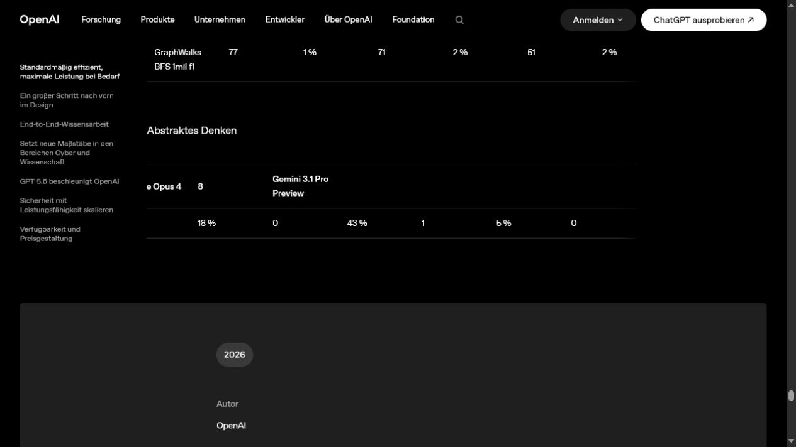
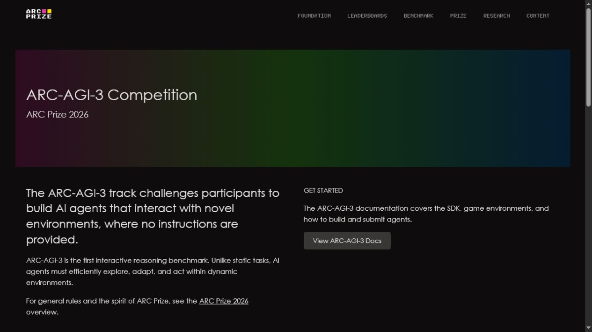
Kimi K3 evidence
Sources: Moonshot AI model card and ARC Prize verified results.
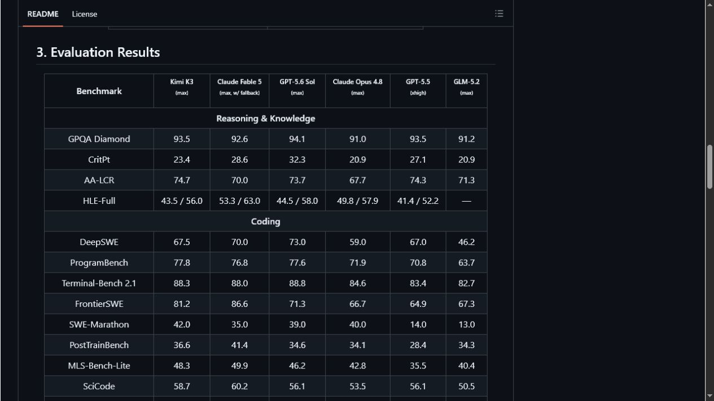
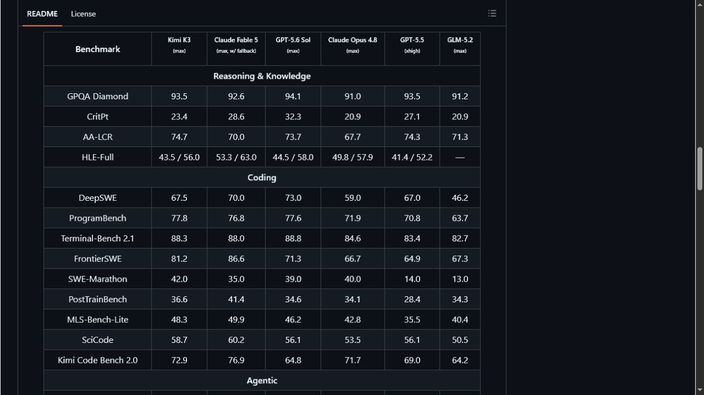
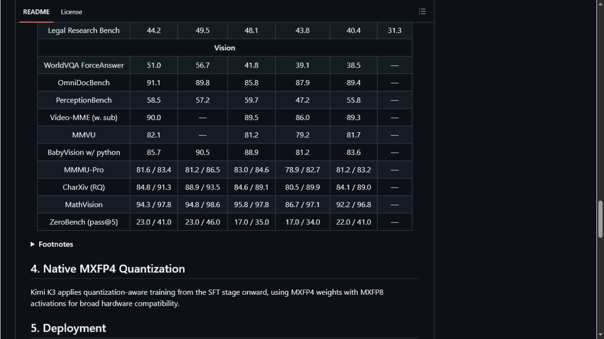
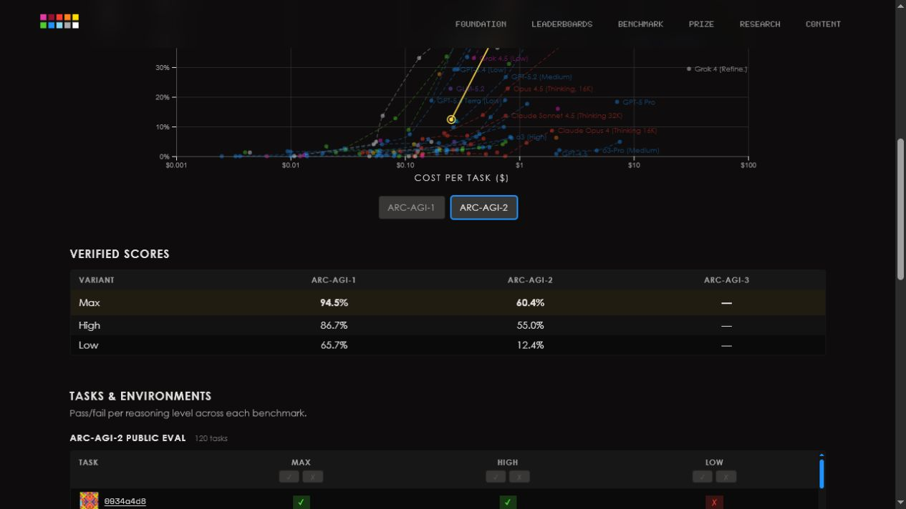
Grok 4.5 evidence
Sources: xAI launch results and ARC Prize verified results.
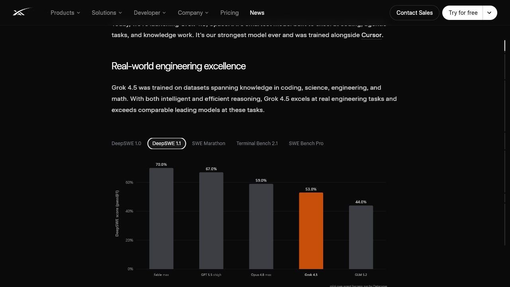
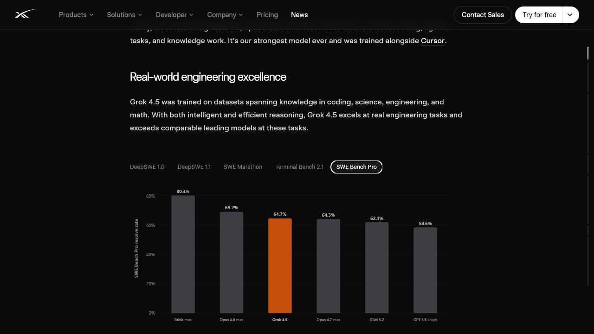
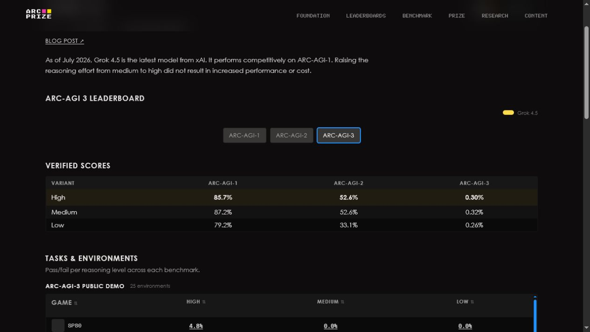
Claude 5 evidence
Sources: ARC Prize verified Claude Opus 5 results and the Claude Sonnet 5 system card.
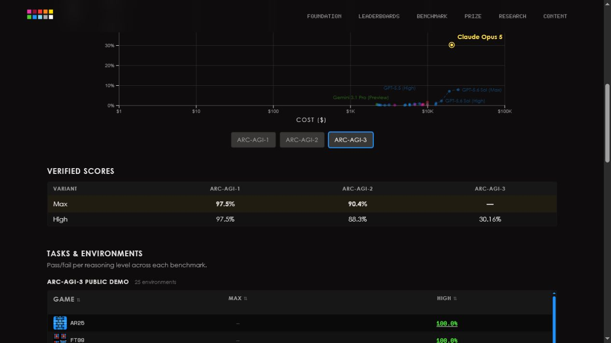
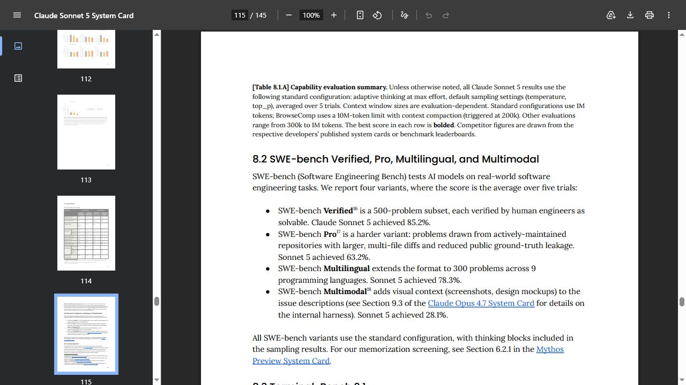
Checked, but deliberately not written
- Terminal-Bench 2.1: not mapped to Terminal-Bench Hard because they are distinct versions.
- Claude Opus 5 (Max): not created as a second sparse model variant; ARC-AGI-3 was not evaluated at Max.
- Newer niche release candidates: retained as leads until an exact overlap with a tracked benchmark and primary-source protocol evidence are available.
Controls and next-run learning
- The reviewed batch is in
manifest.json. - Manifest validation passed with 8 models, 1 benchmark, 26 scores, 15 screenshots, and 11 sources; all 108 automated tests passed.
- The reviewed production plan created exactly 4 models and 13 scores and explicitly replaced exactly 3 MMMU-Pro rows. The second dry-run reported all 26 batch rows unchanged.
- Post-apply mirror verification reported 521 Convex scores, 521 D1 scores, and drift 0.
- Every accepted score is tied to a screenshot that visibly contains the row or table.
- Every future run must start with a top-row diff for all tracked benchmark sources, followed by an independent provider release sweep.
- Tool mode, reasoning effort, harness, and dataset version are compatibility dimensions, not incidental notes.